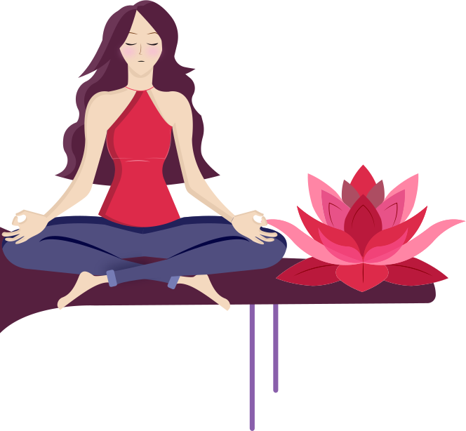

Welcome to my portfolio page!
Scroll down and choose the theme you would like to explore :)
Theme 1 Basic web
to see all projects of that theme

Theme 3 Basic content
to see all projects of that theme
Theme 2 Basic animation
to see all projects of that theme

Theme 4 Basic UX
to see all projects of that theme